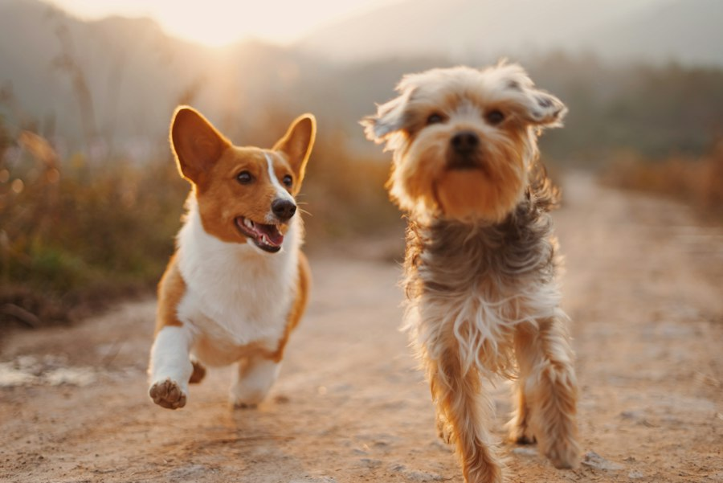

Atendimento emergencial
Disponível para casos urgentes de abandono, acidentes e animais feridos.
Nosso trabalho de resgate começa quando uma patinha precisa de socorro. A partir daí, ajudamos a garantir atendimento veterinário, alimentação, acolhimento e a chance de uma vida melhor.

Disponível para casos urgentes de abandono, acidentes e animais feridos.
(11) 3000-9000
resgate@pataspegadas.org
Precisamos de pessoas para transporte, alimentação, limpeza e acompanhamento.